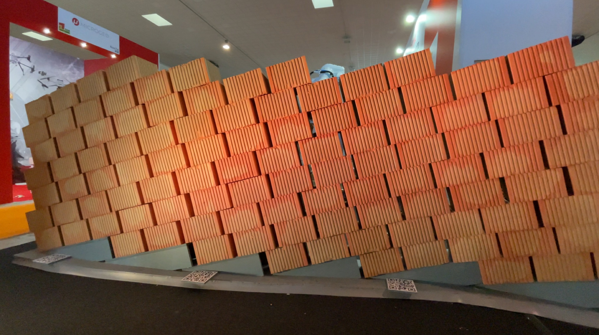
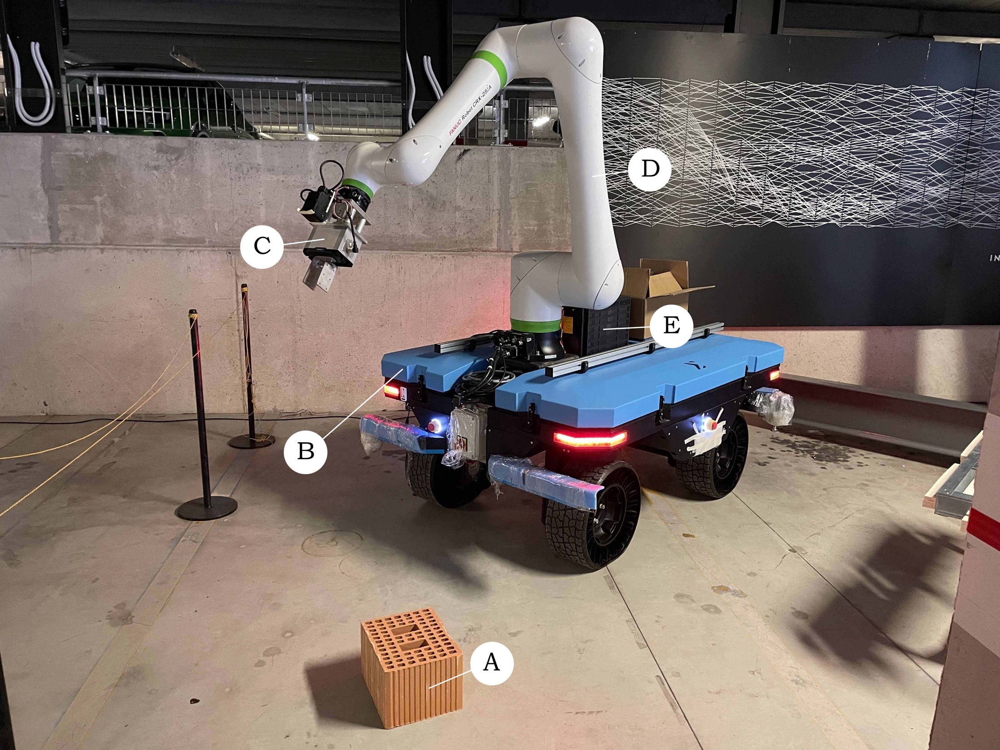
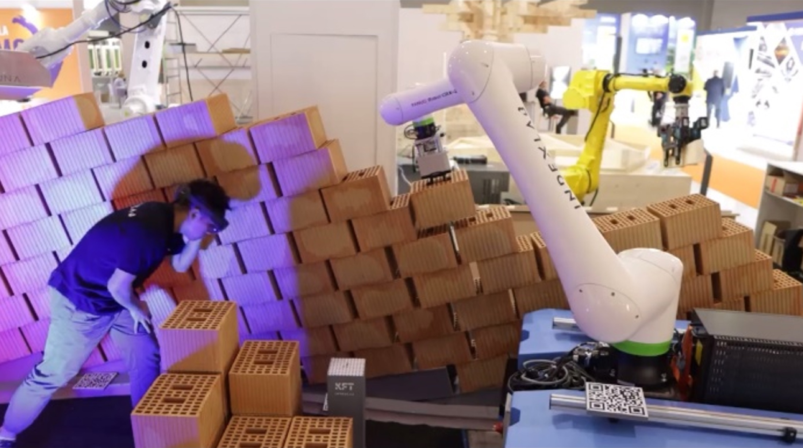
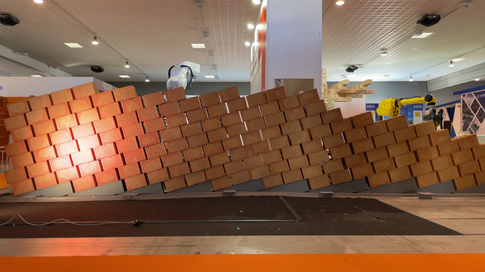
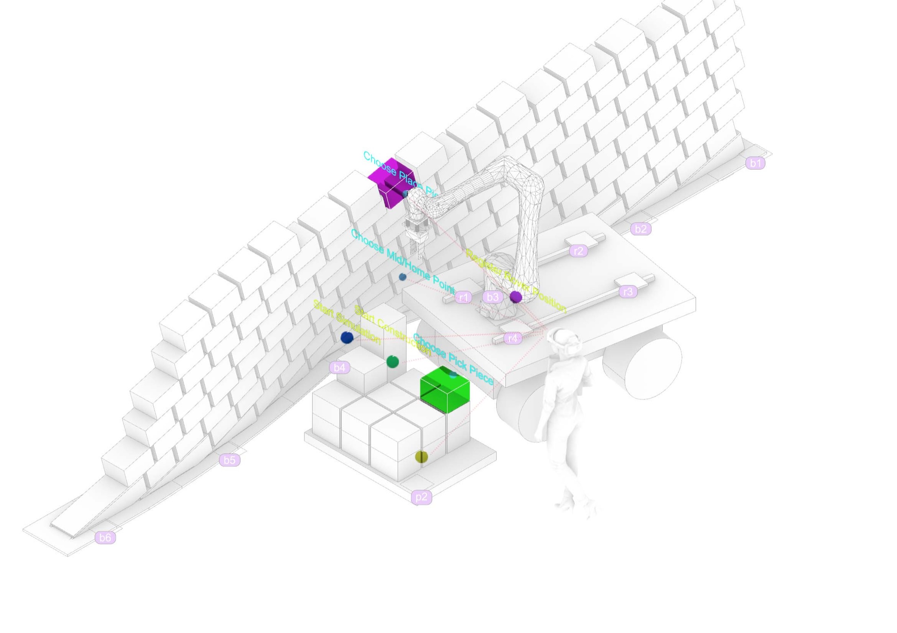
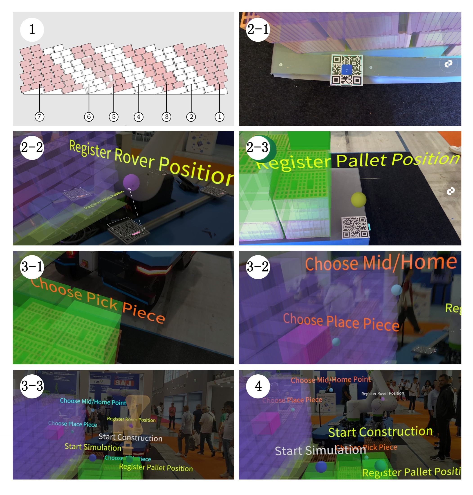
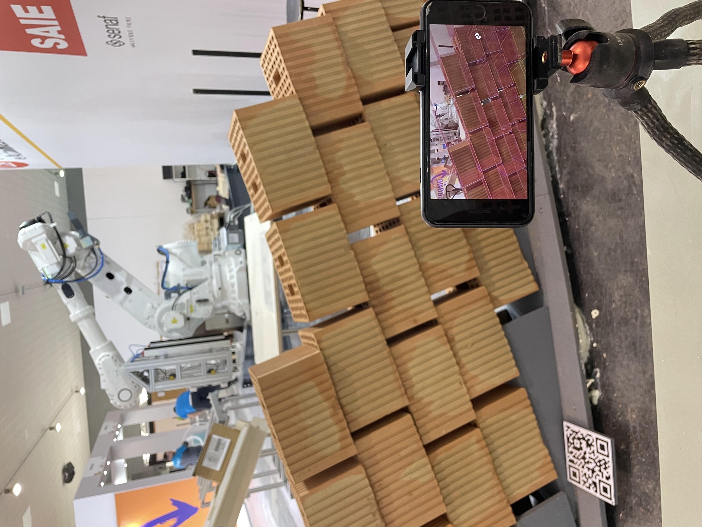

Human–robot collaboration · Milan · 2023–2025
Enhanced AR-Assisted
Robotic Bricklaying
Alternating design and construction through augmented reality and mobile robotics.

Human judgment, robotic precision.
Enhanced AR-Assisted Robotic Bricklaying develops a workflow in which design decisions and construction alternate rather than occur as separate phases. Through an augmented-reality interface, people can observe the emerging structure, intervene spatially, and coordinate the next robotic action.
The system was demonstrated through a large mortarless engineering-brick wall measuring approximately 7 × 1.8 metres. Human involvement helps the process respond to discrepancies encountered during full-scale construction.
- Period
- 2023–2025
- Location
- Milan, Italy
Video
System and interaction.
The workflow combines a mobile robotic platform, an augmented-reality interface, and a human-in-the-loop control structure. The interface allows design decisions to be made against the changing state of the physical wall.



Prototype and full-scale wall.
Prototype trials established the interaction sequence before the system was applied to a dry-stacked engineering-brick wall. The full-scale demonstrator shows how local human adjustments can accumulate across a long construction process.


